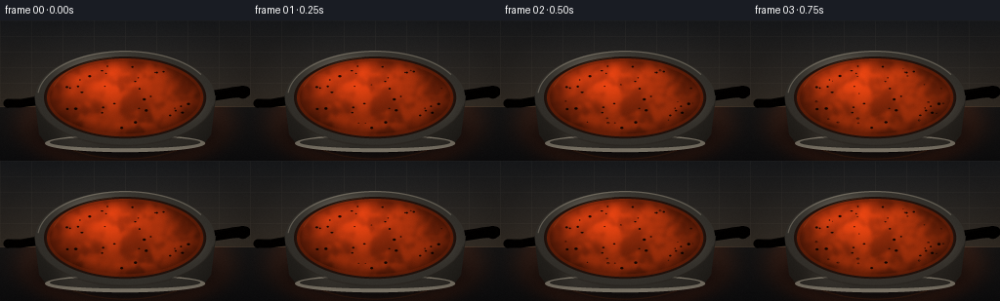
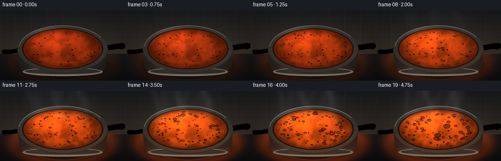
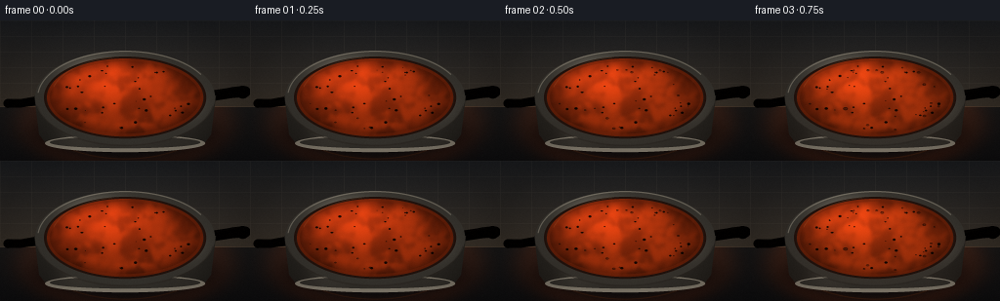
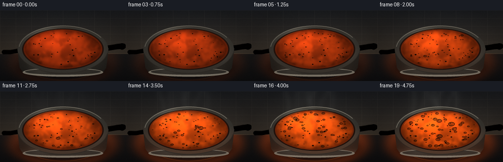
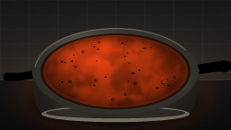
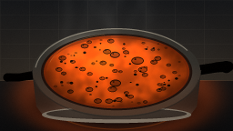
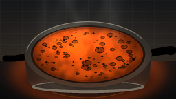
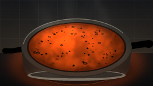

CODING AGENTS AS PIXEL WORLD MODELS
traex/DeepSeek-V4.1-Flash · phygen_108
点击播放 · 原生 RGB 像素
逐轮保存的候选
回放视频、检查图与代码变化。
每份候选均可单独播放。实际图片检查记录在下方工具轨迹中。
候选 01播放与检查图
点击播放 · 原生 RGB 像素


展开代码变化
--- 上一保存版本
+++ 本次保存版本
@@ -0,0 +1,446 @@
+from pathlib import Path
+
+import cv2
+import numpy as np
+from PIL import Image, ImageDraw, ImageFilter
+from scipy.ndimage import gaussian_filter
+
+import artifact_io
+
+
+W, H, N, FPS = 256, 144, 20, 4.0
+S = 4
+SW, SH = W * S, H * S
+CASE_DIR = Path(__file__).resolve().parent
+
+
+def smoothstep(a, b, value):
+ x = np.clip((value - a) / (b - a), 0.0, 1.0)
+ return x * x * (3.0 - 2.0 * x)
+
+
+def blend(dst, rgb, alpha):
+ a = np.asarray(alpha, dtype=np.float32)[..., None]
+ return dst * (1.0 - a) + np.asarray(rgb, dtype=np.float32) * a
+
+
+def pil_mask(draw_fn):
+ image = Image.new("L", (SW, SH), 0)
+ draw_fn(ImageDraw.Draw(image))
+ return np.asarray(image, dtype=np.float32) / 255.0
+
+
+def ellipse_mask(cx, cy, rx, ry):
+ return pil_mask(
+ lambda d: d.ellipse(
+ ((cx - rx) * S, (cy - ry) * S, (cx + rx) * S, (cy + ry) * S),
+ fill=255,
+ )
+ )
+
+
+def rgba_composite(dst, layer, clip=None):
+ rgba = np.asarray(layer, dtype=np.float32) / 255.0
+ alpha = rgba[..., 3]
+ if clip is not None:
+ alpha = alpha * clip
+ return dst * (1.0 - alpha[..., None]) + rgba[..., :3] * alpha[..., None]
+
+
+def make_noise(seed, sigma):
+ rng = np.random.default_rng(seed)
+ small = rng.standard_normal((H, W)).astype(np.float32)
+ small = gaussian_filter(small, sigma=sigma, mode="reflect")
+ small = (small - small.mean()) / (small.std() + 1e-6)
+ return cv2.resize(small, (SW, SH), interpolation=cv2.INTER_CUBIC)
+
+
+def rounded_line(draw, points, width, fill):
+ scaled = [(int(x * S), int(y * S)) for x, y in points]
+ draw.line(scaled, fill=fill, width=int(width * S), joint="curve")
+ radius = int(width * S / 2)
+ for x, y in (scaled[0], scaled[-1]):
+ draw.ellipse((x - radius, y - radius, x + radius, y + radius), fill=fill)
+
+
+X = np.arange(SW, dtype=np.float32)[None, :] / S
+Y = np.arange(SH, dtype=np.float32)[:, None] / S
+
+NOISE_A = make_noise(11, 5.2)
+NOISE_B = make_noise(23, 2.4)
+NOISE_C = make_noise(47, 9.0)
+
+
+def build_bubble_events():
+ rng = np.random.default_rng(108)
+ events = []
+ for _ in range(235):
+ start = int(np.clip(rng.beta(1.75, 1.18) * 20.0, 0, 19))
+ duration = int(rng.integers(2, 5))
+ heat = start / 19.0
+ if start < 6 and rng.random() < 0.55:
+ radial = 0.61 + 0.28 * rng.random()
+ else:
+ radial = 0.91 * np.sqrt(rng.random())
+ angle = rng.uniform(0.0, 2.0 * np.pi)
+ u = radial * np.cos(angle)
+ v = radial * np.sin(angle)
+ radius = rng.uniform(0.72, 1.32) * (1.15 + 2.55 * heat)
+ if rng.random() < 0.07:
+ radius *= 1.55
+ events.append((start, duration, u, v, radius))
+ return events
+
+
+def build_chunks():
+ rng = np.random.default_rng(77)
+ chunks = []
+ for _ in range(34):
+ radial = 0.84 * np.sqrt(rng.random())
+ angle = rng.uniform(0.0, 2.0 * np.pi)
+ u = radial * np.cos(angle)
+ v = radial * np.sin(angle)
+ size = rng.uniform(0.65, 1.8)
+ phase = rng.uniform(0.0, 2.0 * np.pi)
+ kind = int(rng.choice([0, 1, 2, 3], p=[0.34, 0.32, 0.23, 0.11]))
+ chunks.append((u, v, size, phase, kind))
+ return chunks
+
+
+BUBBLES = build_bubble_events()
+CHUNKS = build_chunks()
+
+
+def render_frame(frame_index):
+ t = frame_index / (N - 1)
+ heat = smoothstep(0.03, 0.93, t)
+ boil = smoothstep(0.30, 0.86, t)
+ steam = smoothstep(0.33, 0.94, t)
+
+ yy = np.arange(SH, dtype=np.float32)[:, None]
+ wall_mix = np.clip(yy / (88.0 * S), 0.0, 1.0)
+ top = np.array([25, 28, 32], dtype=np.float32)
+ lower = np.array([54, 48, 41], dtype=np.float32)
+ canvas = top[None, None, :] * (1.0 - wall_mix[..., None])
+ canvas += lower[None, None, :] * wall_mix[..., None]
+ canvas = np.broadcast_to(canvas, (SH, SW, 3)).copy()
+
+ wall_fade = np.clip((88.0 - Y) / 11.0, 0.0, 1.0)
+ tile_x = np.exp(-((X % 32.0 - 0.0) / 0.55) ** 2)
+ tile_y = np.exp(-((Y % 16.0 - 0.0) / 0.42) ** 2)
+ tile = np.clip(tile_x + tile_y, 0.0, 1.0) * 0.075 * wall_fade
+ canvas = blend(canvas, np.array([176, 166, 146]), tile)
+
+ counter_line = np.clip(1.0 - np.abs(Y - 89.0) / 1.0, 0.0, 1.0)
+ canvas = blend(canvas, np.array([146, 127, 101]), counter_line * 0.23)
+
+ stove_mask = (Y >= 89.0).astype(np.float32)
+ stove_mix = np.clip((Y - 89.0) / 55.0, 0.0, 1.0)
+ stove = np.array([22, 23, 24], dtype=np.float32) * (1.0 - stove_mix[..., None])
+ stove += np.array([12, 13, 15], dtype=np.float32) * stove_mix[..., None]
+ canvas = canvas * (1.0 - stove_mask[..., None]) + stove * stove_mask[..., None]
+
+ d_base = np.sqrt(((X - 128.0) / 95.0) ** 2 + ((Y - 105.0) / 43.0) ** 2)
+ burner_glow = np.exp(-((d_base - 1.0) / 0.22) ** 2) * (0.10 + 0.23 * heat)
+ burner_glow += np.exp(-((d_base - 0.72) / 0.15) ** 2) * 0.06 * heat
+ burner_glow *= (Y > 88.0)
+ canvas = blend(canvas, np.array([255, 84, 18]), np.clip(burner_glow, 0.0, 0.36))
+
+ coil = np.exp(-((d_base - 0.86) / 0.012) ** 2) * (Y > 100.0) * (0.12 + 0.30 * heat)
+ canvas = blend(canvas, np.array([255, 112, 24]), np.clip(coil, 0.0, 0.38))
+
+ pan_shadow = pil_mask(
+ lambda d: d.ellipse((29 * S, 99 * S, 227 * S, 136 * S), fill=255)
+ )
+ pan_shadow = gaussian_filter(pan_shadow, sigma=9 * S)
+ canvas = blend(canvas, np.array([3, 3, 4]), pan_shadow * 0.58)
+
+ handle_layer = Image.new("RGBA", (SW, SH), (0, 0, 0, 0))
+ hd = ImageDraw.Draw(handle_layer)
+ rounded_line(hd, [(211, 78), (237, 74), (251, 73)], 11.0, (17, 18, 19, 255))
+ rounded_line(hd, [(214, 76), (237, 72), (249, 71)], 7.0, (57, 58, 57, 255))
+ rounded_line(hd, [(219, 73), (238, 69), (247, 68)], 2.0, (139, 135, 125, 245))
+ hd.ellipse((242 * S, 67 * S, 255 * S, 80 * S), fill=(24, 25, 25, 255))
+ hd.ellipse((246 * S, 69 * S, 254 * S, 77 * S), fill=(72, 72, 69, 255))
+ rounded_line(hd, [(43, 82), (21, 85), (8, 85)], 9.0, (18, 19, 20, 255))
+ rounded_line(hd, [(43, 80), (22, 83), (10, 83)], 5.0, (64, 63, 59, 255))
+ rounded_line(hd, [(38, 78), (21, 81), (13, 81)], 1.4, (144, 138, 126, 225))
+ canvas = rgba_composite(canvas, handle_layer)
+
+ body_mask = pil_mask(
+ lambda d: d.polygon(
+ [
+ (35 * S, 77 * S),
+ (221 * S, 77 * S),
+ (216 * S, 117 * S),
+ (207 * S, 129 * S),
+ (49 * S, 129 * S),
+ (40 * S, 117 * S),
+ ],
+ fill=255,
+ )
+ )
+ body_mask = np.maximum(
+ body_mask,
+ pil_mask(lambda d: d.ellipse((48 * S, 118 * S, 208 * S, 135 * S), fill=255)),
+ )
+ body_x = np.clip((X - 36.0) / 184.0, 0.0, 1.0)
+ body_y = np.clip((Y - 77.0) / 52.0, 0.0, 1.0)
+ body_light = (
+ 0.36
+ + 0.34 * np.exp(-((body_x - 0.25) / 0.11) ** 2)
+ + 0.20 * np.exp(-((body_x - 0.57) / 0.16) ** 2)
+ + 0.07 * np.exp(-((body_x - 0.84) / 0.10) ** 2)
+ )
+ body_light = body_light * (1.0 - 0.25 * body_y)
+ body_light += 0.16 * heat * np.exp(-((body_y - 0.92) / 0.12) ** 2)
+ body_rgb = np.array([104, 100, 91], dtype=np.float32)[None, None, :] * body_light[..., None]
+ body_rgb[..., 0] += 35.0 * heat * body_y
+ body_rgb[..., 1] += 9.0 * heat * body_y
+ body_rgb = np.clip(body_rgb, 0.0, 255.0)
+ canvas = canvas * (1.0 - body_mask[..., None]) + body_rgb * body_mask[..., None]
+
+ lower_rim = ellipse_mask(128, 126, 82, 9)
+ lower_rim_inner = ellipse_mask(128, 125, 77, 6)
+ lower_rim_band = np.clip(lower_rim - lower_rim_inner, 0.0, 1.0)
+ canvas = blend(canvas, np.array([151, 145, 132]), lower_rim_band * 0.78)
+ canvas = blend(canvas, np.array([52, 50, 46]), lower_rim_inner * 0.70)
+
+ outer = ellipse_mask(128, 79, 92, 48)
+ inner = ellipse_mask(128, 79, 83, 42)
+ rim_band = np.clip(outer - inner, 0.0, 1.0)
+ rim_nx = (X - 128.0) / 92.0
+ rim_ny = (Y - 79.0) / 48.0
+ rim_light = (
+ 0.36
+ + 0.50 * np.exp(-(((rim_nx + 0.30) / 0.33) ** 2 + ((rim_ny + 0.55) / 0.30) ** 2))
+ + 0.18 * np.exp(-(((rim_nx - 0.70) / 0.18) ** 2 + ((rim_ny - 0.15) / 0.30) ** 2))
+ )
+ rim_rgb = np.array([143, 139, 128], dtype=np.float32)[None, None, :] * rim_light[..., None]
+ rim_rgb[..., 0] += 30.0 * heat * np.clip(rim_ny + 0.2, 0.0, 1.0)
+ rim_rgb[..., 1] += 9.0 * heat * np.clip(rim_ny + 0.2, 0.0, 1.0)
+ rim_rgb = np.clip(rim_rgb, 0.0, 255.0)
+ canvas = canvas * (1.0 - outer[..., None]) + rim_rgb * outer[..., None]
+
+ interior = blend(
+ canvas,
+ np.array([68, 28, 15]),
+ inner * 0.98,
+ )
+ interior = blend(interior, np.array([20, 13, 11]), np.clip(inner - ellipse_mask(128, 79, 81, 40), 0.0, 1.0) * 0.55)
+ canvas = interior
+
+ soup_mask = ellipse_mask(128, 79, 80, 40)
+ soup_inner = np.sqrt(((X - 128.0) / 80.0) ** 2 + ((Y - 79.0) / 40.0) ** 2)
+ shift_x = int(round(10.0 * t * S))
+ shift_y = int(round(3.0 * np.sin(t * 5.4) * S))
+ swirl = (
+ 0.50 * NOISE_A
+ + 0.27 * np.roll(NOISE_B, shift=(shift_y, shift_x), axis=(0, 1))
+ + 0.15 * np.roll(NOISE_C, shift=(-shift_y, -shift_x // 2), axis=(0, 1))
+ + 0.20 * np.sin(0.085 * X + 0.12 * Y + 7.5 * t + 0.75 * NOISE_B)
+ )
+ swirl = np.tanh(swirl * 1.15)
+ cool_soup = np.array([0.60, 0.18, 0.045], dtype=np.float32)
+ hot_soup = np.array([0.88, 0.31, 0.055], dtype=np.float32)
+ soup_base = cool_soup * (1.0 - heat) + hot_soup * heat
+ broad_light = np.exp(-(((X - 99.0) / 61.0) ** 2 + ((Y - 55.0) / 28.0) ** 2))
+ center_glow = np.exp(-(((X - 127.0) / 68.0) ** 2 + ((Y - 78.0) / 34.0) ** 2))
+ soup_light = 0.72 + 0.20 * swirl + 0.42 * broad_light + 0.15 * center_glow
+ edge_dark = smoothstep(0.68, 1.02, soup_inner)
+ soup_light *= 1.0 - 0.34 * edge_dark
+ soup_rgb = soup_base[None, None, :] * soup_light[..., None] * 255.0
+ soup_rgb[..., 0] += 30.0 * broad_light * (0.55 + 0.45 * heat)
+ soup_rgb[..., 1] += 10.0 * broad_light * (0.35 + 0.65 * heat)
+ soup_rgb[..., 2] += 3.0 * broad_light
+ soup_rgb = np.clip(soup_rgb, 0.0, 255.0)
+ canvas = canvas * (1.0 - soup_mask[..., None]) + soup_rgb * soup_mask[..., None]
+
+ edge_ring = np.clip(soup_mask - ellipse_mask(128, 79, 77, 37), 0.0, 1.0)
+ canvas = blend(canvas, np.array([112, 35, 10]), edge_ring * 0.48)
+
+ chunk_layer = Image.new("RGBA", (SW, SH), (0, 0, 0, 0))
+ cd = ImageDraw.Draw(chunk_layer)
+ colors = [
+ (173, 67, 12, 220),
+ (214, 118, 28, 215),
+ (105, 48, 18, 225),
+ (76, 94, 38, 220),
+ ]
+ for idx, (u, v, size, phase, kind) in enumerate(CHUNKS):
+ drift_x = 1.1 * np.sin(t * 7.2 + phase) * (0.35 + boil)
+ drift_y = 0.55 * np.cos(t * 5.1 + phase * 1.3) * (0.35 + boil)
+ cx = 128.0 + 80.0 * u + drift_x
+ cy = 79.0 + 40.0 * v + drift_y
+ radius = size * (1.0 + 0.10 * boil)
+ color = colors[kind]
+ if kind == 3:
+ cd.ellipse(
+ ((cx - radius * 0.9) * S, (cy - radius * 0.35) * S,
+ (cx + radius * 0.9) * S, (cy + radius * 0.35) * S),
+ fill=color,
+ )
+ else:
+ cd.ellipse(
+ ((cx - radius) * S, (cy - radius * 0.72) * S,
+ (cx + radius) * S, (cy + radius * 0.72) * S),
+ fill=color,
+ outline=(80, 25, 8, 145),
+ width=max(1, int(0.32 * S)),
+ )
+ canvas = rgba_composite(canvas, chunk_layer, soup_mask)
+
+ bubble_layer = Image.new("RGBA", (SW, SH), (0, 0, 0, 0))
+ bd = ImageDraw.Draw(bubble_layer)
+ visible = []
+ for start, duration, u, v, radius in BUBBLES:
+ age = frame_index - start
+ if 0 <= age < duration:
+ phase = np.sin(np.pi * (age + 0.55) / (duration + 0.45))
+ rr = max(0.35, radius * phase)
+ visible.append((rr, u, v, start, age, duration))
+ visible.sort(key=lambda item: item[0])
+ for rr, u, v, start, age, duration in visible:
+ cx = 128.0 + 80.0 * u + 0.45 * np.sin(frame_index * 1.7 + start)
+ cy = 79.0 + 40.0 * v + 0.24 * np.cos(frame_index * 1.2 + start * 0.8)
+ ry = rr * 0.62
+ ring_alpha = int(115 + 90 * min(1.0, rr / 4.0))
+ bd.ellipse(
+ ((cx - rr) * S, (cy - ry) * S, (cx + rr) * S, (cy + ry) * S),
+ fill=(205, 78, 17, 78),
+ outline=(83, 20, 5, ring_alpha),
+ width=max(1, int((0.58 + 0.08 * rr) * S)),
+ )
+ bd.ellipse(
+ ((cx - rr * 0.66) * S, (cy - ry * 0.58) * S,
+ (cx + rr * 0.66) * S, (cy + ry * 0.58) * S),
+ fill=(236, 111, 31, 82),
+ )
+ highlight = max(0.45, rr * 0.30)
+ bd.ellipse(
+ ((cx - rr * 0.50) * S, (cy - ry * 0.56) * S,
+ (cx - rr * 0.50 + highlight) * S, (cy - ry * 0.56 + highlight * 0.70) * S),
+ fill=(255, 223, 164, 205),
+ )
+ if rr > 2.2:
+ bd.arc(
+ ((cx - rr * 0.72) * S, (cy - ry * 0.70) * S,
+ (cx + rr * 0.72) * S, (cy + ry * 0.70) * S),
+ start=195,
+ end=330,
+ fill=(255, 167, 85, 150),
+ width=max(1, int(0.28 * S)),
+ )
+ canvas = rgba_composite(canvas, bubble_layer, soup_mask)
+
+ if frame_index >= 10:
+ foam_layer = Image.new("RGBA", (SW, SH), (0, 0, 0, 0))
+ fd = ImageDraw.Draw(foam_layer)
+ rng = np.random.default_rng(900 + frame_index)
+ for _ in range(int(5 + 13 * boil)):
+ angle = rng.uniform(0.0, 2.0 * np.pi)
+ radial = rng.uniform(0.70, 0.96)
+ cx = 128.0 + 80.0 * radial * np.cos(angle)
+ cy = 79.0 + 40.0 * radial * np.sin(angle)
+ rr = rng.uniform(0.55, 1.45) * (0.8 + 0.7 * boil)
+ fd.ellipse(
+ ((cx - rr) * S, (cy - rr * 0.55) * S,
+ (cx + rr) * S, (cy + rr * 0.55) * S),
+ fill=(245, 181, 102, 78),
+ outline=(255, 216, 160, 120),
+ width=max(1, int(0.22 * S)),
+ )
+ canvas = rgba_composite(canvas, foam_layer, soup_mask)
+
+ inner_shadow = np.clip(ellipse_mask(128, 79, 83, 42) - soup_mask, 0.0, 1.0)
+ canvas = blend(canvas, np.array([28, 17, 13]), inner_shadow * 0.72)
+ rim_top_light = pil_mask(
+ lambda d: d.arc(
+ (38 * S, 31 * S, 218 * S, 127 * S),
+ start=186,
+ end=330,
+ fill=255,
+ width=int(1.25 * S),
+ )
+ )
+ canvas = blend(canvas, np.array([226, 218, 198]), rim_top_light * (0.28 + 0.15 * heat))
+ rim_front_shadow = pil_mask(
+ lambda d: d.arc(
+ (36 * S, 29 * S, 220 * S, 129 * S),
+ start=10,
+ end=170,
+ fill=255,
+ width=int(1.7 * S),
+ )
+ )
+ canvas = blend(canvas, np.array([41, 37, 33]), rim_front_shadow * 0.52)
+
+ if steam > 0.001:
+ soft = Image.new("L", (SW, SH), 0)
+ wisp = Image.new("L", (SW, SH), 0)
+ sd = ImageDraw.Draw(soft)
+ wd = ImageDraw.Draw(wisp)
+ for index in range(9):
+ phase = index * 1.37 + 0.4
+ x_start = 78.0 + index * 11.0 + 4.0 * np.sin(index * 2.1)
+ y_start = 63.0 + 4.0 * np.cos(index * 1.8)
+ points = []
+ for step in range(34):
+ frac = step / 33.0
+ y = y_start - frac * (y_start + 13.0)
+ x = (
+ x_start
+ + (8.0 + 0.16 * index) * np.sin(frac * 3.2 + phase + t * 2.8) * (0.18 + frac)
+ + 2.8 * np.sin(frac * 8.0 - t * 3.6 + phase * 0.5)
+ )
+ points.append((x, y))
+ scaled = [(int(px * S), int(py * S)) for px, py in points]
+ width = int((2.0 + 0.9 * np.sin(index * 1.3 + t * 2.0)) * S)
+ wd.line(scaled, fill=int(150 * steam), width=max(2, width), joint="curve")
+ sd.line(scaled, fill=int(58 * steam), width=max(4, width * 3), joint="curve")
+ soft = soft.filter(ImageFilter.GaussianBlur(radius=10 * S))
+ wisp = wisp.filter(ImageFilter.GaussianBlur(radius=3.8 * S))
+ soft_np = np.asarray(soft, dtype=np.float32) / 255.0
+ wisp_np = np.asarray(wisp, dtype=np.float32) / 255.0
+ steam_alpha = np.clip(soft_np * 0.16 + wisp_np * 0.20, 0.0, 0.28)
+ steam_alpha *= (1.0 - 0.45 * np.clip((Y - 104.0) / 30.0, 0.0, 1.0))
+ steam_color = np.array([214, 220, 216], dtype=np.float32)[None, None, :]
+ canvas = blend(canvas, steam_color, steam_alpha)
+ steam_glow = np.clip(gaussian_filter(wisp_np, sigma=6 * S) - wisp_np * 0.35, 0.0, 1.0)
+ canvas = blend(canvas, np.array([255, 228, 194]), steam_glow * 0.035 * steam)
+
+ top_glint = pil_mask(
+ lambda d: d.arc(
+ (52 * S, 37 * S, 204 * S, 121 * S),
+ start=195,
+ end=260,
+ fill=255,
+ width=int(0.9 * S),
+ )
+ )
+ canvas = blend(canvas, np.array([255, 194, 118]), top_glint * (0.11 + 0.12 * heat))
+
+ image = cv2.resize(canvas, (W, H), interpolation=cv2.INTER_AREA)
+ blurred = gaussian_filter(image, sigma=(0.55, 0.55, 0.0))
+ image = image + 0.22 * (image - blurred)
+ vignette_x = (np.arange(W, dtype=np.float32)[None, :] - W / 2) / (W / 2)
+ vignette_y = (np.arange(H, dtype=np.float32)[:, None] - H / 2) / (H / 2)
+ vignette = 1.0 - 0.20 * np.clip(vignette_x ** 2 + 0.70 * vignette_y ** 2, 0.0, 1.0)
+ image *= vignette[..., None]
+ image[..., 0] = image[..., 0] * 1.015 + 1.5
+ image[..., 1] = image[..., 1] * 1.005 + 0.5
+ image[..., 2] = image[..., 2] * 0.985
+ rng = np.random.default_rng(400 + frame_index)
+ grain = rng.normal(0.0, 0.65, size=(H, W, 1)).astype(np.float32)
+ image += grain
+ return np.clip(image, 0, 255).astype(np.uint8)
+
+
+def main():
+ frames = np.stack([render_frame(i) for i in range(N)])
+ artifact_io.save(frames, CASE_DIR)
+ print(f"Saved {N} frames at {W}x{H}, {FPS:g} fps to {CASE_DIR}")
+
+
+if __name__ == "__main__":
+ main()
候选 02播放与检查图
点击播放 · 原生 RGB 像素


展开代码变化
--- 上一保存版本
+++ 本次保存版本
@@ -74,8 +74,8 @@
def build_bubble_events():
rng = np.random.default_rng(108)
events = []
- for _ in range(235):
- start = int(np.clip(rng.beta(1.75, 1.18) * 20.0, 0, 19))
+ for _ in range(285):
+ start = int(np.clip(rng.beta(1.35, 1.10) * 20.0, 0, 19))
duration = int(rng.integers(2, 5))
heat = start / 19.0
if start < 6 and rng.random() < 0.55:
@@ -85,7 +85,7 @@
angle = rng.uniform(0.0, 2.0 * np.pi)
u = radial * np.cos(angle)
v = radial * np.sin(angle)
- radius = rng.uniform(0.72, 1.32) * (1.15 + 2.55 * heat)
+ radius = rng.uniform(0.76, 1.40) * (1.12 + 2.78 * heat)
if rng.random() < 0.07:
radius *= 1.55
events.append((start, duration, u, v, radius))
@@ -113,9 +113,9 @@
def render_frame(frame_index):
t = frame_index / (N - 1)
- heat = smoothstep(0.03, 0.93, t)
- boil = smoothstep(0.30, 0.86, t)
- steam = smoothstep(0.33, 0.94, t)
+ heat = smoothstep(0.00, 0.84, t)
+ boil = smoothstep(0.18, 0.72, t)
+ steam = smoothstep(0.22, 0.76, t)
yy = np.arange(SH, dtype=np.float32)[:, None]
wall_mix = np.clip(yy / (88.0 * S), 0.0, 1.0)
@@ -141,13 +141,13 @@
canvas = canvas * (1.0 - stove_mask[..., None]) + stove * stove_mask[..., None]
d_base = np.sqrt(((X - 128.0) / 95.0) ** 2 + ((Y - 105.0) / 43.0) ** 2)
- burner_glow = np.exp(-((d_base - 1.0) / 0.22) ** 2) * (0.10 + 0.23 * heat)
- burner_glow += np.exp(-((d_base - 0.72) / 0.15) ** 2) * 0.06 * heat
+ burner_glow = np.exp(-((d_base - 1.0) / 0.22) ** 2) * (0.10 + 0.30 * heat)
+ burner_glow += np.exp(-((d_base - 0.72) / 0.15) ** 2) * 0.08 * heat
burner_glow *= (Y > 88.0)
- canvas = blend(canvas, np.array([255, 84, 18]), np.clip(burner_glow, 0.0, 0.36))
-
- coil = np.exp(-((d_base - 0.86) / 0.012) ** 2) * (Y > 100.0) * (0.12 + 0.30 * heat)
- canvas = blend(canvas, np.array([255, 112, 24]), np.clip(coil, 0.0, 0.38))
+ canvas = blend(canvas, np.array([255, 84, 18]), np.clip(burner_glow, 0.0, 0.43))
+
+ coil = np.exp(-((d_base - 0.86) / 0.012) ** 2) * (Y > 100.0) * (0.12 + 0.40 * heat)
+ canvas = blend(canvas, np.array([255, 112, 24]), np.clip(coil, 0.0, 0.47))
pan_shadow = pil_mask(
lambda d: d.ellipse((29 * S, 99 * S, 227 * S, 136 * S), fill=255)
@@ -333,11 +333,11 @@
)
canvas = rgba_composite(canvas, bubble_layer, soup_mask)
- if frame_index >= 10:
+ if frame_index >= 6:
foam_layer = Image.new("RGBA", (SW, SH), (0, 0, 0, 0))
fd = ImageDraw.Draw(foam_layer)
rng = np.random.default_rng(900 + frame_index)
- for _ in range(int(5 + 13 * boil)):
+ for _ in range(int(4 + 20 * boil)):
angle = rng.uniform(0.0, 2.0 * np.pi)
radial = rng.uniform(0.70, 0.96)
cx = 128.0 + 80.0 * radial * np.cos(angle)
@@ -378,36 +378,53 @@
if steam > 0.001:
soft = Image.new("L", (SW, SH), 0)
wisp = Image.new("L", (SW, SH), 0)
+ plume = Image.new("L", (SW, SH), 0)
sd = ImageDraw.Draw(soft)
wd = ImageDraw.Draw(wisp)
- for index in range(9):
- phase = index * 1.37 + 0.4
- x_start = 78.0 + index * 11.0 + 4.0 * np.sin(index * 2.1)
- y_start = 63.0 + 4.0 * np.cos(index * 1.8)
+ pd = ImageDraw.Draw(plume)
+ for index in range(12):
+ phase = index * 1.19 + 0.4
+ x_start = 69.0 + index * 10.0 + 4.0 * np.sin(index * 2.1)
+ y_start = 61.0 + 4.0 * np.cos(index * 1.8)
points = []
- for step in range(34):
- frac = step / 33.0
- y = y_start - frac * (y_start + 13.0)
+ for step in range(38):
+ frac = step / 37.0
+ y = y_start - frac * (y_start + 9.0)
x = (
x_start
- + (8.0 + 0.16 * index) * np.sin(frac * 3.2 + phase + t * 2.8) * (0.18 + frac)
- + 2.8 * np.sin(frac * 8.0 - t * 3.6 + phase * 0.5)
+ + (10.0 + 0.12 * index) * np.sin(frac * 3.0 + phase + t * 2.8) * (0.18 + frac)
+ + 3.0 * np.sin(frac * 7.5 - t * 3.6 + phase * 0.5)
)
points.append((x, y))
scaled = [(int(px * S), int(py * S)) for px, py in points]
- width = int((2.0 + 0.9 * np.sin(index * 1.3 + t * 2.0)) * S)
+ width = int((2.2 + 0.9 * np.sin(index * 1.3 + t * 2.0)) * S)
wd.line(scaled, fill=int(150 * steam), width=max(2, width), joint="curve")
sd.line(scaled, fill=int(58 * steam), width=max(4, width * 3), joint="curve")
+ for index in range(8):
+ phase = index * 1.6 + 0.3
+ x0 = 76.0 + index * 15.0
+ for step in range(32):
+ frac = step / 31.0
+ y = 66.0 - frac * 72.0
+ x = x0 + 15.0 * np.sin(frac * 2.6 + phase + t * 2.1) * frac
+ rr = (9.0 + 3.0 * np.sin(index + t * 3.0)) * (0.55 + 0.55 * frac) * S
+ pd.ellipse(
+ (int(x * S - rr), int(y * S - rr * 0.66),
+ int(x * S + rr), int(y * S + rr * 0.66)),
+ fill=int(20 * steam),
+ )
soft = soft.filter(ImageFilter.GaussianBlur(radius=10 * S))
- wisp = wisp.filter(ImageFilter.GaussianBlur(radius=3.8 * S))
+ wisp = wisp.filter(ImageFilter.GaussianBlur(radius=4.2 * S))
+ plume = plume.filter(ImageFilter.GaussianBlur(radius=15 * S))
soft_np = np.asarray(soft, dtype=np.float32) / 255.0
wisp_np = np.asarray(wisp, dtype=np.float32) / 255.0
- steam_alpha = np.clip(soft_np * 0.16 + wisp_np * 0.20, 0.0, 0.28)
+ plume_np = np.asarray(plume, dtype=np.float32) / 255.0
+ steam_alpha = np.clip(soft_np * 0.19 + wisp_np * 0.23 + plume_np * 0.13, 0.0, 0.37)
steam_alpha *= (1.0 - 0.45 * np.clip((Y - 104.0) / 30.0, 0.0, 1.0))
steam_color = np.array([214, 220, 216], dtype=np.float32)[None, None, :]
canvas = blend(canvas, steam_color, steam_alpha)
steam_glow = np.clip(gaussian_filter(wisp_np, sigma=6 * S) - wisp_np * 0.35, 0.0, 1.0)
- canvas = blend(canvas, np.array([255, 228, 194]), steam_glow * 0.035 * steam)
+ canvas = blend(canvas, np.array([255, 228, 194]), steam_glow * 0.050 * steam)
top_glint = pil_mask(
lambda d: d.arc(
可观测工具轨迹
实际执行的命令与返回图片。
命令 1exit 0
/bin/bash -lc "pwd && rg --files -g '"'!**/.git/**'"' | sed -n '1,200p'"
命令 2exit 0
/bin/bash -lc "sed -n '1,240p' prompt.txt"
命令 3exit 0
/bin/bash -lc "sed -n '1,260p' GENERATION_RULES.md"
命令 4exit 0
/bin/bash -lc 'cat task_spec.json'
命令 5exit 0
/bin/bash -lc "sed -n '1,280p' artifact_io.py"
命令 6exit 0
/bin/bash -lc "sed -n '1,260p' player_template.html"
命令 7exit 0
/bin/bash -lc "python - <<'PY' import importlib.util for m in ['numpy','PIL','cv2','imageio','matplotlib','scipy']: print(m, bool(importlib.util.find_spec(m))) PY"
命令 8exit 1
/bin/bash -lc 'python generate.py'
命令 9exit 0
/bin/bash -lc 'python generate.py'
命令 10exit 0
/bin/bash -lc "python - <<'PY'
import cv2, numpy as np, glob
frames=[cv2.imread(p) for p in sorted(glob.glob('frames/*.png'))]
for i in range(1,len(frames)):
d=np.abs(frames[i].astype(np.int16)-frames[i-1].astype(np.int16))
print(i, f'{d.mean():.2f}', int((d.max(2)>10).sum()))
PY"命令 11exit 0
/bin/bash -lc 'python generate.py'
命令 12exit 0
/bin/bash -lc "ls -lh index.html pixels.npz inspection.png transition_check.png frames | sed -n '1,80p'"
命令 13exit 0
/bin/bash -lc "python - <<'PY'
import cv2, numpy as np, glob
paths=sorted(glob.glob('frames/*.png'))
frames=[cv2.imread(p) for p in paths]
print('shape', frames[0].shape, 'count', len(frames))
for i in range(1,len(frames)):
d=np.abs(frames[i].astype(np.int16)-frames[i-1].astype(np.int16))
print(f'{i:02d}: mean={d.mean():.2f} changed>10={(d.max(2)>10).mean()*100:.1f}%')
PY"命令 14exit 1
/bin/bash -lc "python -m py_compile generate.py && python - <<'PY'
from pathlib import Path
import numpy as np, json
z=np.load('pixels.npz')
print('npz keys:', list(z.keys()))
p=z['pixels']
print('pixels:', p.shape, p.dtype, 'unique frames:', len(np.unique(p[...,0], axis=2)))
print('index exists:', Path('index.html').is_file(), 'html bytes:', Path('index.html').stat().st_size)
print('spec:', json.loads(Path('task_spec.json').read_text()))
PY"命令 15exit 0
/bin/bash -lc "command -v chromium || command -v chromium-browser || command -v google-chrome || true; python - <<'PY'
import importlib.util
print('playwright:', bool(importlib.util.find_spec('playwright')))
PY"命令 16exit 0
/bin/bash -lc 'git status --short'
命令 17exit 0
/bin/bash -lc "python - <<'PY'
from pathlib import Path
import numpy as np, json
z=np.load('pixels.npz')
p=z['pixels']
print('npz pixels:', p.shape, p.dtype)
print('frame hashes:', len({int(x) for x in p.reshape(-1)[::max(1,p.size//100000)]}))
print('frame pngs:', len(list(Path('frames').glob('*.png'))))
print('index bytes:', Path('index.html').stat().st_size)
print('spec:', json.loads(Path('task_spec.json').read_text()))
PY"命令 18exit 1
/bin/bash -lc "python - <<'PY'
from pathlib import Path
from playwright.sync_api import sync_playwright
url = Path('index.html').resolve().as_uri()
with sync_playwright() as p:
browser = p.chromium.launch(headless=True)
page = browser.new_page(viewport={'width': 900, 'height': 500})
errors=[]
page.on('pageerror', lambda exc: errors.append(str(exc)))
page.goto(url, wait_until='load')
page.wait_for_function('window.__pixelReady === true', timeout=10000)
status = page.locator('#time').inner_text()
dims = page.locator('#canvas').evaluate('c => [c.width, c.height]')
page.locator('#seek').fill('19')
page.locator('#seek').dispatch_event('input')
status_end = page.locator('#time').inner_text()
page.screenshot(path='.tmp/player_check.png')
print('canvas', dims, 'initial', status, 'final', status_end, 'errors', errors)
browser.close()
PY"命令 19exit 1
/bin/bash -lc 'mkdir -p .tmp && TMPDIR="$PWD/.tmp" python - <<'"'PY'
from pathlib import Path
from playwright.sync_api import sync_playwright
url = Path('index.html').resolve().as_uri()
with sync_playwright() as p:
browser = p.chromium.launch(headless=True)
page = browser.new_page(viewport={'width': 900, 'height': 500})
errors=[]
page.on('pageerror', lambda exc: errors.append(str(exc)))
page.goto(url, wait_until='load')
page.wait_for_function('window.__pixelReady === true', timeout=10000)
status = page.locator('#time').inner_text()
dims = page.locator('#canvas').evaluate('c => [c.width, c.height]')
page.locator('#seek').fill('19')
page.locator('#seek').dispatch_event('input')
status_end = page.locator('#time').inner_text()
page.screenshot(path='.tmp/player_check.png')
print('canvas', dims, 'initial', status, 'final', status_end, 'errors', errors)
browser.close()
PY"命令 20exit 1
/bin/bash -lc "python - <<'PY'
from pathlib import Path
import base64, json, re, numpy as np
text=Path('index.html').read_text()
match=re.search(r'const DATA=(\\{.*?\\}),W=DATA\\.width', text)
assert match
D=json.loads(match.group(1))
raw=base64.b64decode(D['first'])
first=np.frombuffer(raw,dtype='<u4').reshape(256,144).T
assert first.shape==(144,256)
frames=[first]
for encoded in D['deltas']:
f=frames[-1].copy()
packet=np.frombuffer(base64.b64decode(encoded),dtype='<u4')
i=0
while i<len(packet):
start,count=int(packet[i]),int(packet[i+1]); i+=2
f.reshape(-1)[start:start+count]=packet[i:i+count]; i+=count
frames.append(f)
p=np.load('pixels.npz')['pixels']
assert len(frames)==20 and all(np.array_equal(f,p[...,i]) for i,f in enumerate(frames))
print('player payload decodes to all 20 saved frames; exact pixel match')
PY"命令 21exit 0
/bin/bash -lc "python - <<'PY'
from pathlib import Path
import base64, json, re, numpy as np
text=Path('index.html').read_text()
D=json.loads(re.search(r'const DATA=(\\{.*?\\}),W=DATA\\.width', text).group(1))
p=np.load('pixels.npz')['pixels']
first=np.frombuffer(base64.b64decode(D['first']),dtype='<u4').reshape(256,144).T
print('first equal',np.array_equal(first,p[...,0]),first.shape,p[...,0].shape)
frames=[first]
for j,encoded in enumerate(D['deltas'],1):
f=frames[-1].copy(); packet=np.frombuffer(base64.b64decode(encoded),dtype='<u4'); i=0
while i<len(packet):
start,count=int(packet[i]),int(packet[i+1]); i+=2
f.reshape(-1)[start:start+count]=packet[i:i+count]; i+=count
frames.append(f)
if not np.array_equal(f,p[...,j]):
diff=np.count_nonzero(f"'!=p[...,j]); print('"'mismatch frame',j,'diff',diff,'first equal',np.array_equal(first,p[...,j])); break
else: print('all equal')
PY"命令 22exit 0
/bin/bash -lc "python - <<'PY'
from pathlib import Path
import base64,json,re,numpy as np
D=json.loads(re.search(r'const DATA=(\\{.*?\\}),W=DATA\\.width',Path('index.html').read_text()).group(1))
p=np.load('pixels.npz')['pixels']
a=np.frombuffer(base64.b64decode(D['first']),dtype='<u4')
b=p[...,0].reshape(-1)
print('len',len(a),len(b),'equal',np.array_equal(a,b))
print('a first',a[:10]);print('b first',b[:10]);print('a last',a[-10:]);print('b last',b[-10:])
PY"命令 23exit 0
/bin/bash -lc "python - <<'PY'
from pathlib import Path
import base64, json, re, numpy as np
text=Path('index.html').read_text()
D=json.loads(re.search(r'const DATA=(\\{.*?\\}),W=DATA\\.width', text).group(1))
p=np.load('pixels.npz')['pixels']
first=np.frombuffer(base64.b64decode(D['first']),dtype='<u4').reshape(144,256)
frames=[first]
for encoded in D['deltas']:
f=frames[-1].copy(); packet=np.frombuffer(base64.b64decode(encoded),dtype='<u4'); i=0
while i<len(packet):
start,count=int(packet[i]),int(packet[i+1]); i+=2
f.reshape(-1)[start:start+count]=packet[i:i+count]; i+=count
frames.append(f)
assert len(frames)==20 and all(np.array_equal(f,p[...,i]) for i,f in enumerate(frames))
print('player payload decodes to all 20 saved frames; exact pixel match')
PY"视觉工具实际返回图片 1

视觉工具实际返回图片 2

视觉工具实际返回图片 3

视觉工具实际返回图片 4

视觉工具实际返回图片 5

视觉工具实际返回图片 6

视觉工具实际返回图片 7

保存候选 2 份；完成命令 23 次；可验证图片返回 7 张。原始 API 响应与完整日志保留在本地。